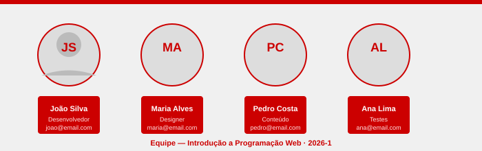

Sobre o Projeto
Este site foi desenvolvido como Projeto Final da disciplina Introdução a Desenvolvimento Web, do curso de graduação da FUMEC, sob orientação do Professor Gilmar Luiz de Borba, semestre 2026-1.
O tema escolhido foi um site de serviços automotivos, apresentando os recursos ensinados ao longo da disciplina: HTML5, CSS3 e JavaScript básico.
👤 Integrantes da Equipe

| Nome | Função no Projeto | Contato | Turma |
|---|---|---|---|
| Richard Augusto | Tech Lead | santosrick156@gmail.com | 2026-1 |
| João Victor Alves | Desenvolvedor (HTML/CSS) | @gmail.com | 2026-1 |
| Thiago Guarda | Desenvolvedor (HTML/CSS) | @gmail.com | 2026-1 |
| Sarah Guimarães | Design e Estilo (CSS) | @gmail.com | 2026-1 |
| Lucas Erler | Conteúdo e Textos | @gmail.com | 2026-1 |
Sobre a AutoPro Oficina
A AutoPro é uma oficina mecânica fictícia criada para fins acadêmicos, como tema do Projeto Final da disciplina. O conteúdo do site como textos, serviços, preços e imagens foram criados exclusivamente para demonstrar os recursos aprendidos em sala de aula.
A oficina está ambientada em Belo Horizonte / MG e os dados de contato, endereço e valores são fictícios.
Recursos Utilizados no Projeto
HTML:
- Estrutura semântica: header, nav, main, section, footer
- Tabelas: table, tr, th, td, thead, tbody
- Formulários: form (method GET), input, select, textarea, label
- Mapa clicável: img usemap, map, area (rect e circle)
- Google Maps: iframe embed
- Âncoras: id + href="#id"
- Listas: ul, ol, li
- Links: target="_blank", rel="nofollow"
- Figure e img responsiva
- Entidades HTML: ©, ↑, ✓ etc.
CSS:
- Reset universal com seletor *
- Seletor html com font-size: 62.5% (base do rem)
- Unidade rem para fontes
- Bordas (border) e background-color
- position: fixed para o header
- display: flex no menu de navegação
- display: grid com grid-template-columns e gap
- Unidade fr (fragment)
- Função repeat() no grid
- Hover e transition (all 400ms ease-in-out)
- clamp() para fontes responsivas
- @media para responsividade
- rgba (transparência no header)
- text-shadow nos títulos
- nth-child para linhas alternadas da tabela
JavaScript:
- function (funções)
- var (variáveis)
- alert() com caracteres de escape (\n, \")
- document.getElementById()
- new Date() e toLocaleDateString()
- parseFloat() para cálculos
- Operações aritméticas (+, *, toFixed)
- innerHTML para exibir resultados
Informações do Projeto
Disciplina...: Introdução a Programação Web
Professor....: Gilmar Luiz de Borba
Semestre.....: 2026-1
Versão.......: 1.0
Tema.........: Site de Serviços Automotivos — AutoPro Oficina